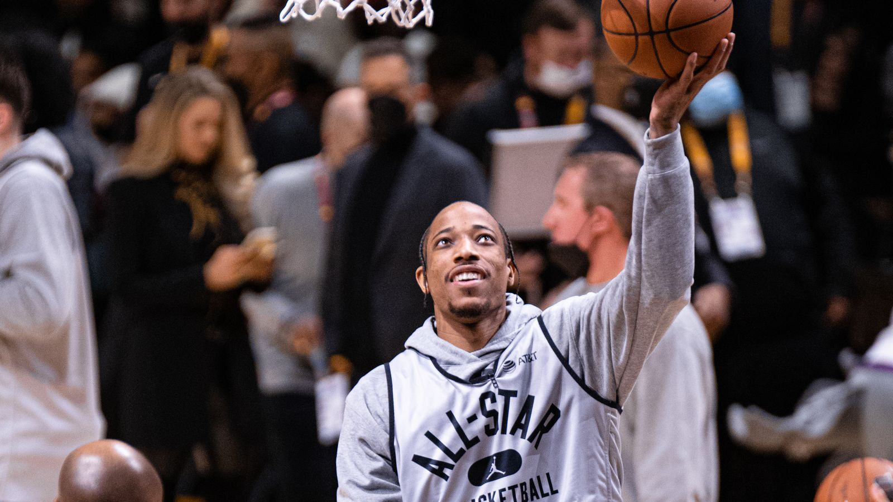

デマー・デローザン、 ナゲッツ入り合意 —— ヒート等蹴り1年390万ドル、ヨキッチ&マレーの下でプレーオフ勝負へ
デンバー・ナゲッツが、6度のオールスター経験を持つデマー・デローザン(36)と1年390万ドルの契約に合意したと、ESPNのシャムズ・チャラニア氏が日本時間8月21日に報じた。

ヒート・ウィザーズ・ペリカンズとも交渉、決め手はナゲッツでの役割
ESPNによると、デローザンはフリーエージェントの過程でマイアミ・ヒート、ワシントン・ウィザーズ、ニューオーリンズ・ペリカンズとも交渉していたが、最終的にウエスタン・カンファレンスで優勝争いに加われる点と、チーム内で大きな役割を担える点を重視してナゲッツを選んだという。ナゲッツのフロントとコーチ陣はここ数週間、ニコラ・ヨキッチ、ジャマール・マレーとの相性の良さを説きながらデローザンの獲得に力を入れていたとESPNは伝えている。
ヒートとは相思相愛も、優先されたのはクレイ・トンプソン
ESPNによれば、デローザンとヒートの間には相互の関心があり、バム・アデバヨとは夏の間やり取りを続けていたという。しかしヒートは最終的にクレイ・トンプソンの獲得を優先しており、マーベリックスとの契約買い取り成立後、ウェイバーを通過し次第トンプソンと契約する見通しだと報じられている。
キングスがサラリー整理で放出、保証額は2570万ドルのうち1000万ドルのみ
デローザンは前シーズンをサクラメント・キングスで過ごしたが、キングスがサラリー整理の必要に迫られ、今オフにウェイバーにかけられフリーエージェントとなっていた。2026-27シーズンの契約額2570万ドルのうち、保証されていたのは1000万ドルのみだったとESPNは伝えている。
17年目も18.4得点、成功率ほぼ5割をキープ
デローザンはNBA17年目となった前シーズンも平均18.4得点、フィールドゴール成功率はほぼ5割を記録し、リーグ屈指の得点力を保っている。前シーズン以前は12シーズン連続で平均20得点以上を記録していた。出場面でも安定しており、前シーズンは怪我以外の理由でわずか5試合を除く全試合に出場、直近5シーズンいずれも70試合以上に出場しているという。トロントで9年プレーした後、サンアントニオで3年、シカゴで3年を過ごし、2024年にサクラメントへ移籍していた。
出典: ESPN「Sources: DeRozan joining Nuggets on 1-year deal」
https://www.espn.com/nba/story/_/id/49684447/nuggets-signing-6-all-star-demar-derozan-1-year-deal